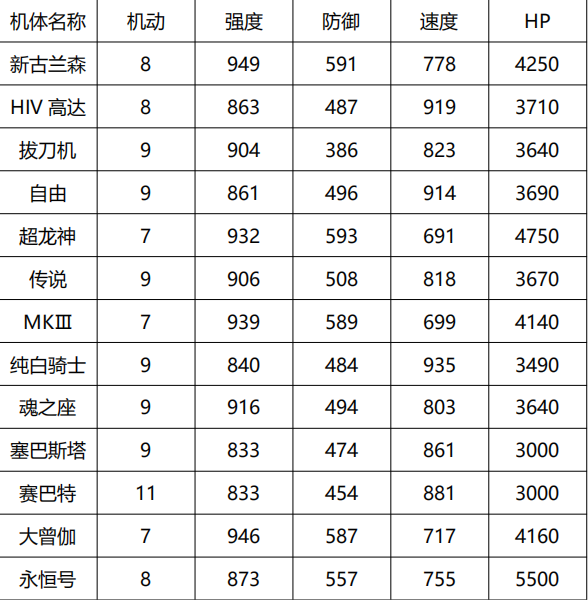

隐藏攻略
第一关：（命运的抉择）开局后，统夜击落4架敌机，我方增援。异界BOSS洛随风第5回合行动，第7回合撤退，击落奖励传感器。克鲁泽不撤退，由统夜击落克鲁泽，过关会获得4点速度的奖励。
第二关：（相遇）水月冰初始位置有助推器，占领就可以得到助推器，水月冰3回合后撤退，低于1100HP，下个回合也会撤退（下同），击落奖励磁性涂料。
曾伽增援后，响介可以劝降曾伽一次，再让曾伽被响介反击击落，可以获得曾伽隐藏1，对话会多两句。击落曾伽奖励道具维修，曾伽低于300血撤退。-----------（全局开关1）
第三关：（人类的意志）异界BOSS愁在第2回合行动，第五回合后撤退，低于950HP，下个回合也会撤退（下同），击落奖励超合金z。
雷低于500HP撤退，只要击落过关后可以获得C装甲。由统夜击落雷，过关奖励2点防御+传感器。
（4点强度未加换成传感器）
第四关：（反击）异界BOSS第2回合行动，第5回合撤退，低于1050HP，下个回合也会撤退（下同），击落奖励磁性涂料。由统夜主动击落异界BOSS，过关奖励8点强度。
第十回合，我方在基地那里增援拉米娅。商店有不错的东西，最好买个助推器，不然后面有点难打。
第五关：（前往远东）请尽快击落异界BOSS，不然会发生“卧槽”的事情，异界BOSS低于1100HP（下同），下个回合撤退。统夜击落森，过关可以获得2点速度的奖励。
阿奇波尔德的亲卫跟随阿奇波尔德移动。
第六关：（突破重重封锁）地图中间被围住的那棵树，连续占领三次可以获得努力。异界BOSS第2回合行动，第5回合撤退，低于1000HP下个回合也撤退（下同），击落奖励超合金z。
这关增援很多，敌方下降到一定人数就会增援，所以最好控制在我方回合，并保留精神。森低于600血撤退，由响介击落，过关奖励8点强度，只要森被击落就奖励磁性涂料。
响介击落森后，可以回复满状态，可以利用一下。
----------------（本关打开全局开关2）
第七关：（悲恸之远东）水月冰1回合行动，3回合撤退，击落奖励磁性涂料。这关不要出现爆机的情况，只能允许拉米娅剧情爆机，不是被导弹打爆机。
西罗克低于600血撤退，由统夜击落，过关奖励8点速度，只要西罗克被击落就奖励正义。
西罗克在森被击落后，就会每回合附加强攻，可以选择留着森，把两个都打残血。
西罗克撤退后，曾伽增援，拉米娅离队，由响介击落曾伽获得曾伽隐藏2。----------------------（全局开关3）
水月冰初始位置是隐藏商店，都可以进。
第八关：（重新出发）异界BOSS第2回合行动，第4回合撤退，击落奖励超合金z，由统夜击落肯特，过关奖励4点防御，肯特低于800血撤退。
第九关：（意外的来客）异界BOSS第5回合才撤退，有足够的时间击杀。由统夜主动击落阿奇波尔德，过关奖励1点防御1点速度，阿奇波尔德第10回合后撤退。
由响介主动击落魂之座，获得响介隐藏1，响介主动击落魂之座后，会有很长的剧情，如果不是，剧情较短，很容易区分隐藏是否完成。----------------（全局开关4），
魂之座出场8回合撤退。无论谁击落魂之座，都可以获得传感器和正义。过关后，若瓦西博士在场，可以获得3000金钱的奖励，剧情会多一句话。
过关后沙也加永久离队回泰斯拉研究所去了，拉米娅加入。
第十关：（对决哈曼）开局是统夜和马修曼的单挑，统夜若在100HP以内主动击落马修曼，过关会奖励8点防御。
这里必须是第6回合击落马修曼，设置好伤害的，玩家稍微调整就行，需要22级，23级的统夜，不然会被双击，速度不够，自己想办法，击落马修曼后，我方大部队增援。
然后开始第二阶段，接下来击落马修曼，哈曼暴走每回合附带强攻，击落夏亚，则哈曼回血2000，
之后每回合，回血500，先击落哈曼，则游戏结束，本关记得响介努力杀芬妮，升级到31级。
期间由阿姆罗主动击落夏亚，则阿姆罗获得隐藏1。-------------------（全局开关5）。
第十一关：（魔装机神）地图中心那个石头是隐藏商店，正树进，地图上还有个商店，卖正义。异界BOSS第一回合行动，第七回合撤退，击落奖励传感器。
击落或者等异界BOSS撤退后，白河愁和正树出来，出来开始算，白河愁四个回合后撤退，玩家不可能击落古兰森，打到一定血量，会强制由正树击落。
击落古兰森奖励超合金W，根基，电子盾，并获得白河愁隐藏1。------（全局开关6）
最后响介击落保罗，强度，防卫，速度各奖励1点。
这关伤害最大化打法建议：统夜热血直击（精神不够吃个正义）；响介魂；拉米娅强攻直击，穆强攻直击（这两个有一个残血），之后反击打愁一个直击；
阿姆罗和基拉再补伤害，应该还能打出个斗志；这是我认为的最大伤害了，把白打到1万以下，伤害是够的。
第十二关：（奥布之战）地图左下角树林围着的特殊区域，有道具。异界BOSS第一回合行动，不撤退，击落奖励磁性涂料。
击落萨拉和妮哥亚后，西罗克开始行动并附带异次元，西罗克只能最后一个击落，否则游戏结束。
用阿斯兰主动击落西罗克，过关奖励8点强度，并获得阿斯兰无正隐藏。-------------------（全局开关7）。
第十三关：（圣战）地图中间两块特殊地形，右边那个是隐藏商店，都可以进。两个异界BOSS都是第七回合撤退。响介击落西罗克，过关奖励6点强度。
当敌方数量为低于4个时，比安开始行动，行动算起，需要在五个回合内打到一定血量。击落比安会奖励传感器2和超合金W，这关需要在30回合内通关。
第十四关：（新的敌人）除了35级的BOSS，其他等级的BOSS均不能被击杀，异界BOSS击杀有医治，这一关大概率会用到。
统夜主动击落奥组德，过关奖励16点强度，响介主动击落帕尔洛斯，过关奖励16点强度，有能力的话，可以两个都击落。
这关站位稍微注意点，不然很难做到完美通关，6回合开始，我方全体不能移动，持续到8回合结束，9回合会开始剧情，然后过关。
新增一个挑战，若击杀传说之冰，获得奖励超合金W和M合金，若二次击杀传说之冰获得传感器2和10000金。
说说本关的几个层次吧：一（初级）、只能击杀古兰威尔或者红莲之一；二（中级）、古兰威尔和红莲都可以击杀；
三（高级）、击杀传说之冰，古兰威尔和红莲之一； 四（传说级）、击杀两次传说之冰；
五、（萌新级）完成所有击杀，安腾大佬做到了，贴吧有这一关的打法攻略。
第十五关：（宇宙初遇）开始会有剧情，略狗血，实在是要节省关卡，就不花费在琉妮身上了。异界BOSS水月冰第四回合撤退，击落奖励磁性涂料。
之后阿斯兰支援，带来了些好消息。响介击落亚赞，过关有6点防御奖励，亚赞低于1000HP撤退。
第十六关：（来自PLANT的悲鸣）地图中间特殊图形是隐藏商店，异界BOSS响介第五回合撤退，击落奖励传感器。本关若永恒号满血过关，则奖励基拉16点强度。
基拉低于100HP反击击落克鲁泽，获得基拉隐藏，22关驾驶强化版自由。-------------------（全局开关8）
第十七关：（命运之轮）异界BOSS，异界愁第6回合撤退，击落奖励超合金z。
接下来阿姆罗和基拉异次元隐藏，这个隐藏不是永久获得异次元，是后面每一关只要满足条件，就可以获得异次元，下一关取消，需要重新获取。
第一步：完成第十关阿姆罗击落夏亚隐藏和16关基拉击落克鲁泽隐藏。
第二步：基拉低于100HP反击击落克鲁泽，阿姆罗低于100HP反击击落西罗克。西罗克只能最后一个被杀，支援亲卫后开始行动，并每回合回800HP，阿姆罗留精神反击。
第三步：西罗克击落后，若以上隐藏全部完成，就会支援夏亚。阿姆罗低于50HP击落夏亚，从下关起阿姆罗和基拉获得异次元隐藏。-------------------（全局开关9）
这关我方雷切尔和白河愁会增援。觉得异次元隐藏太难，可以不做，对剧情走向没有任何影响。
本关打开 -------------------（全局开关10）
第十八关：（螺旋的邂逅）异界BOSS第15回合行动，水月冰第20回合撤退，击落奖励磁性涂料。
前期响介和拉米娅顶住伤害不死就行，顺利灭掉第一批敌人后，敌方和我方增援。本关只要响介和拉米娅不死，则拉米娅过关后换乘拔刀机，纯白不能击杀。
这关因为剧情需要，会让响介附带异次元，所以暂时取代阿姆罗和基拉的异次元隐藏。
第二次击杀魂之座的时候，用响介主动击杀，过关奖励8点速度，第一次击杀魂之座无所谓。大BOSS不能被击杀，低于2.5万血，过关。
本关打开
-------------------（全局开关11）
第十九关：（宿命）异界BOSS愁第7回合撤退，击落有道具。
异次元隐藏：第十七关，完成基拉和阿姆罗隐藏（后期攻略这里会省略了，全为主动击落），本关使用基拉或者阿姆罗击杀帕尔洛斯，谁击杀谁获得异次元。
接下来亡灵MK3和纯白隐藏。
第一步：完成第九关击落魂之座隐藏。
第二步：在法斯丽娜和帕尔洛斯不离场的情况下，把白骑士引到左下角的区域，并打到2000HP以下，会触发剧情。
触发剧情后，响介会攻击白骑士一次，攻击之后，如果白骑士HP在1到200之间，则艾克塞琳回归时驾驶纯白，否则为升级版白骑士。------------------（全局开关12）
第三步：完成以上所有隐藏，并同时让响介和艾克低于100HP，且把监察官到打到低于13000HP，会触发剧情，获得亡灵MK3。只有完成以上所有，才能获得亡灵3和纯白。
注意监察官必须一回合之内解决，且必须最后一个被击杀。
------------------（全局开关13）
第二十关：（星空之下）本关三个异界BOSS都没有回合撤退，只有低于一定血量撤退，和之前关卡一样。
隐藏商店有两个，都是在激光建筑上，左边响介进，右边统夜进。异次元隐藏：使用基拉或者阿姆罗击杀帕尔洛斯，谁击杀谁获得异次元。
响介主动击杀雷柯过关奖励16点速度，统夜主动击杀帕特里克过关奖励16点速度，这两个涉及隐藏的BOSS会移动远程攻击。
40回合内全歼即胜利，35回合内全歼有奖励，28回合内全歼，再次获得奖励，20回合内全歼，还有助推器。
第二十一关：（未来可期）异界BOSS水月冰第6回合撤退，击落有道具。击落西罗克可以获得阿姆罗和基拉异次元隐藏。
雷切尔隐藏，若用雷切尔击落克鲁泽，会发生赠送机体剧情，不然就驾驶进化版的拂晓。------------------（全局开关14）
多兰达尔低于1.5万HP会发生剧情，白河愁变成BOSS，每回合回血3000，防御超级牛逼，留好精神尽量最少回合解决，之后再把白河愁打到低于1万HP，过关。
剧情中，若击杀白河愁，则响介过关奖励6点速度，本关地图最上方三个白色的建筑，中间那个占领有超合金Z，可以获得多个。
这里也解释一下，这些BOSS（包括之前出现的一些）经验很高，出现得很靠前，玩家很容易出现满级，所以不得不剧情杀。
另外这里是设计剧情先让白离场再增援，这样就可以自主设计等级，不然直接由我方转成敌方，等级是继承的，会很坑。
这里说一下打白河愁怎么伤害最大化吧。利用纯白四击新古兰森，响介魂，阿姆罗热血异次元双击，再其他机体近战一个热血，统夜热血直击加再动热血，
拉米娅强攻直击，雷切尔强攻觉醒直击+补给强攻觉醒+情义强攻觉醒，这是我认为的最大伤害了，把白打到1万以下，绰绰有余。
第二十二关：（离）异界BOSS第6回合撤退，击落有道具。击落异界BOSS也会获得异次元，若12关完成阿斯兰隐藏，这关阿斯兰驾驶无限正义，且有异次元，最后一次上战场了。
若16关完成基拉隐藏，本关基拉驾驶加强版自由（我方最远射程）。
第二十三关：（武神装攻）异界BOSS10回合后撤退，击落有道具。夏亚为异次元BOSS，本关需要20回合内通关。
开始是曾伽和维伽吉的单挑，曾伽需要击落他。之后双方更换机体，曾伽低于300HP触发剧情，我方增援，这里都很简单。
曾伽主动击落维伽吉过关奖励16点强度。若第二关完成曾伽隐藏1，过关奖励16点速度，若第7关完成隐藏2，过关曾伽机体会带特技，否则无特技。本关是赠送特技的，无关隐藏。
若21关完成雷切尔隐藏，本关结束雷切尔更换机体，属性略好，防御系统也高级一点。
第二十四关：（远古龙神降临）异界BOSS异界响介，第八回合撤退，击落有奖励。帕尔洛斯为击杀获得异次元的BOSS。
开始需要在10回合内清光除魂之座外的所有人，并把魂之座打到300HP以下。监察官登场后，需要在5回合内击杀，并把魂之座打到1000HP以下。
剧情中统夜换成超龙神，过关后拉米娅武器加强。
第二十五关：(终结神之使者）异界BOSS愁第6回合撤退，击落有奖励。森为击杀获得异次元的BOSS，左上角骷髅头有隐藏商店。
响介主动击落夏尼，过关奖励8点防御，阿姆罗主动击落西罗克，过关奖励16点强度。
敌方少于10个后，敌方就会无限增援，击落森和夏尼后，然后进入黄色下面那块长方形区域，BOSS才会主动出击。
大概BOSS身边3格范围左右会回血，要引出来打，多兰达尔只能最后击杀。
第二十六关：（邪神来临）异界BOSS愁第8回合撤退，击落有奖励。地图炮小兵为击杀获得异次元的小兵，名字有提示，梅基保斯的初始位置是隐藏商店，本关少于8个，每回合无限增援。
四骑士是无限回血的，必须占领他所对应的区域才能击落。两位队长第一回合就行动，无限回血，必须先击落四骑士。这里四骑士都有道具送，不需要对应人物击杀，两位队长不送道具。
击败两位队长后，会有能量体和夏亚增援，夏亚是特殊BOSS，夏亚会告诉你，是选择拉米娅还是阿露菲米跟队了。
若选择用拉米娅主动击落夏亚，则拉米娅跟队，阿露菲米离队------------------（全局开关15）；
若选择用阿露菲米主动击落夏亚，则阿露菲米跟队，拉米娅米离队------------------（全局开关16）；若用其他人击杀，则接受惩罚。
增援的能量体，不可能击杀，玩家顶住5个回合的样子，白何愁会增援，白河愁受伤即可触发剧情，之后全歼敌人过关。
本关结束后，响介和艾克塞琳更换最终武器，加入的白河愁和之前精神略有不同。
新增一个小剧情：曾伽低于200HP击杀维伽吉，可以获得一个小隐藏，28关可以使用一次直击。（全局开关19）
第二十七关：（初始之地）异界BOSS响介第8回合撤退，击落有奖励。四个异次元兵，有一个是真的，击杀获得异次元，真的异次元兵所在的位置（左上角），也是隐藏商店。
击杀响介后，两个大BOSS开始行动，击落法斯丽娜后，两个大BOSS开始暴走。敌方低于8个时，会增援三种能量装置。
敌方低于9个时，每回合会增援6个，这6个兵分为监察官和雷蒙的亲卫兵以及补给兵，亲卫兵随着主BOSS移动，补给兵若在场，每回合给对应主BOSS回2000HP。
击落对应的小BOSS，大BOSS才会掉血，击落架雷蒙才可以击落监察官，击落监察官后，就可以过关。
第二十八关：（神之领域）异界BOSS第八回合如果没有击杀的话，也不撤退，但是会回满血。击杀次元兵获得异次元。本关正树可以掉血，但是己方回合结束必须满HP。
敌方低于7个第一波增援，假雷蒙开始行动，再次低于7个，第二波增援，假雷蒙爆发。假雷蒙受对应的小BOSS保护。
监察官第一回合就行动，打到2万HP以下会爆发强攻，并每回合回血2000，且受假雷蒙保护。
最后灭掉监察官后，最终BOSS登场，打到2.5万HP以下会爆发强攻，并每回合回血3000，这里开始正树就不要求非要满HP了。
敌方增援和我方回满状态后，这个可以理解为29关吧，监察官在敌方低于8个后，就可以击杀了。
邪神最初驾驶的志雷马是可以提前击杀的，但是也会触发暴走。击杀志雷马后，邪神更换机体，就只能最后一个击杀了。这里曾伽小剧情，会使用直击。
全歼敌人后，会增援我方3个NPC和神使，神使不移动，受伤就可以过关，之后会无限增援假邪神，可以没事刷刷钱吧。
这关有两个隐藏商店，分别在地图中间那两块墙的下面，是对称的。（全局开关17.18）